外観のインスペクタ
インスペクタを用いて、幾何学要素の外観をコントロールすることができます。これには２つのレベルがあります。外観のインスペクタは、現在選択されている要素に対してその属性を変更します。初期設定はこの影響を受けません。主な外観は
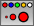
ボタンによってアクセスできます。このセクションは、基本的な外観に焦点をあてています。次の図は、点、直線、円、多角形のパラメータについて示しています。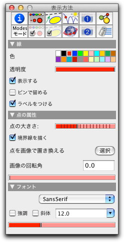 | 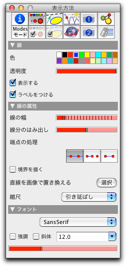 | 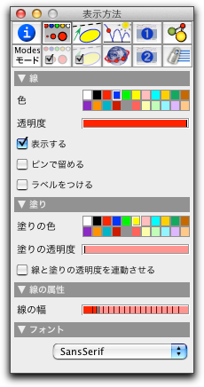 | |||
| 点の外観 | 線の外観 | 円や多角形の外観 |
これらのウィンドウのそれぞれは、色と可視性をコントロールします。いくつかのパラメータは、オブジェクトによって特有なものです。
色と透明度
選択した要素の色を変えるのは、単に色のパレットのどれかをクリックするだけです。選択した要素の色はすぐに変わります。
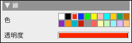 |
| カラーパレット |
この中にない色を使いたい場合は、まずそれに近い色をダブルクリックします。すると、その色の色選択ウィンドウがポップアップします。この色選択ウィンドウは、オペレーティングシステムにより異なりますが、通常はこのような色を選択する方法がいくつか用意されています。 Mac-OSXの場合は次のようになります。
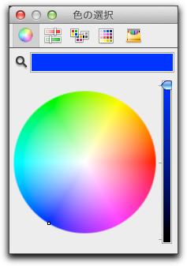 | 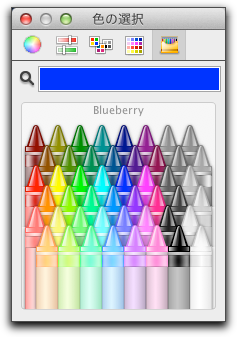 |
|
| カラーホイール | 拡張パレット |
この方法でパレットの色を変えると、 そのパレットの対応する色を使っているすべての要素の色が変わる ということは重要ですので注意してください。
次に、要素の透明度を調節するスライダーについて説明します。透明度は "全く見えない(透明)" から "それだけが見える(背景は見えない)" まであります。
| 透明度の段階 |
透明は、他の図形を邪魔しない補助線で使うとよいでしょう。比較的重要度の低い要素は、わずかに見えるようにしておくとよいでしょう。画面上で操作可能に(選択したり動かしたり)するためには、少なくとも20%の不透明度を必要とします。見えない要素は、表示メニューの「式による表示」で選択することができます。しかし、クリッピング(後述)はできません。点や線を見えなくするもう一つの方法は、サイズをゼロにすることです。
Cinderella.2 では、円を塗りつぶすことができます。塗りつぶす色は、「塗りの色」 で変更できます。円の内部と境界線の不透明度も変更できます。
大きさ
オブジェクトの大きさをコントロールするスライダもあります。点のためのものと円や直線の線のためのものがあります。
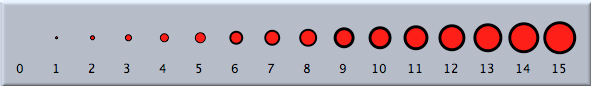 |
| 点の大きさの例 |
大きさゼロの点は非常に便利です。それは見えませんが、選択して動かすことができ、クリッピングされた直線上のクリッピングした点として扱えます。これにより、線分の端点をつかんで動かすときの理想的な点となります。余分な"装飾"をしなくてすむからです。
クリッピング
直線が"クリップ"されるかどうかの設定をします。"クリップ"とは、直線の端点を切り取ることです。そのためのボタンが３つあります。
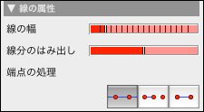 |
| クリッピングコントロール |
クリップされていない直線は表示領域の端から端まで描画されます。クリップされた直線は２つの方法で切り取られます。２番目のボタンでは、直線を描く時に使った２点で切り取られます。３番目のボタンでは、直線上にあるすべての点のうち、両端にある点で切り取られます。このルールはやや複雑ですが、自然なふるまいになります。
- 直線の "クリッピング点" は、その直線上になければなりません。さらに、可視でなければならず、無限遠点であってはいけません。点の大きさをゼロにすると隠されたクリッピング点ができます。
- 直線上のすべてのクリッピング点がクリッピングのために参照されます。
- 直線が少なくとも２つのクリッピング点を持つならば、最初の点から最後の点まで線が引かれます。
- クリッピング点が２つに満たない場合は、直線はクリッピングされません。
これらの規則は次のような効果をもたらします。
- 直線上のどこかの部分が必ず表示されます。
- 直線上の可視的な点はその上にあります。
これは、図形上で予想される通りのものとなります。点が直線上にあるかどうかを決定することは、シンデレラの定理自動証明によってなされます。 これにより、数学的に正確で一貫したふるまいが保証されるのです。
線分のはみ出し
ある端点がクリッピングされてしまうのが好ましくないことがあります。線がまだ続くように見えるとよいことがしばしばあります。そこで、「線分のはみ出し」スライダーを使って、はみ出し具合をコントロールすることができます。スライダーの位置により、 線の全長の 0% から 50% の範囲で両端からのはみ出しを調節します。
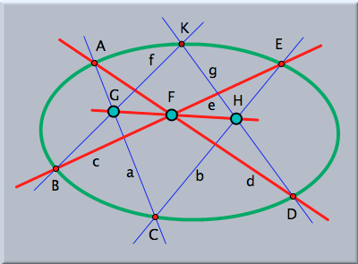 |
| 個々に色、線幅、はみ出しをつけたパスカルの定理 |
初期設定
ボタン
 と
と  による２つの情報ブロックがあります。そこでの設定は、選択されたすべての要素と、それ以降に作られる要素に適用されます。
による２つの情報ブロックがあります。そこでの設定は、選択されたすべての要素と、それ以降に作られる要素に適用されます。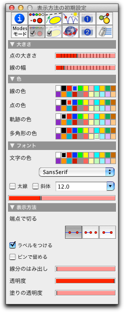 | 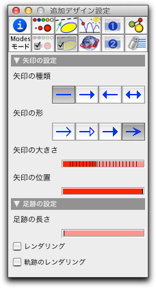 |
|
| 基本的な外観の初期設定 | 矢印と足跡についての初期設定 |
Page last modified on Thursday 23 of February, 2012 [12:48:52 UTC].
The original document is available at
http://doc.cinderella.de/tiki-index.php?page=Inspecting%20AppearanceJ